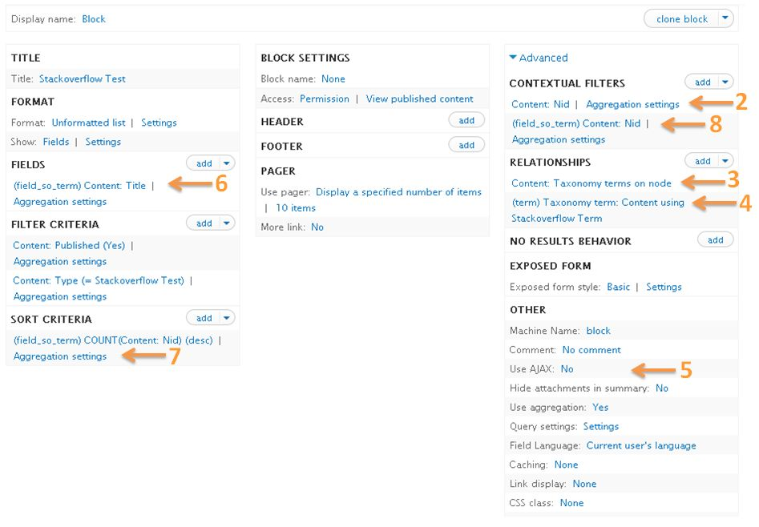

NLP amb Drupal 8
Drupal&Beers, 1 de Juny
netzstrategen - http://netzstrategen.com
Julià Mestieri - @julimestieri
Gràcies a Drupal.cat

per la organització i la invitació
Índex
- Què és el NLP
- Una mica sobre ML
- Alguns serveis
- Drupal 8 REST API
- Integrant serveis NLP
- Aportant valor al projecte
Presentación
Julià Mestieri
I'm web developer at netzstrategen
I like free software and its community, vim and whatever with PHP and a lot of data :D @julimestieri | drupal.org/u/quironnetzstrategen
netzstrategen
...per cert, busquem desenvolupadors
escriu-nos a jobs@netzstrategen.com i suma't a l'equip!Què és el NLP
Language Processing
Habitualment en la informàtica el que trobem són llenguatges estructurats que son processats per programes
Tenen delimitadors com {} i paraules claus if, for, function,... Es poden processar amb expresions regulars, autòmates, intèrprets, compiladors...El problema és:
com interpretem amb ordinador un text humà?
Un fantasma recòrre Europa: l’espectre del comunisme. Contra aquest espectre s’han conjurat en guerra santa totes les potències de la vella Europa, el papa i el tsar, Metternich i Guizot, els radicals francesos i els policies alemanys.Què volem saber d'un text així?
Quins noms de llocs hi aparèixen? Noms propis? o quins són els sustantius? Qui tò te el text? enfadat o humorístic? És un text formal o informal?
El text natural no pot ser processat com els llenguatges estructurats
Per això fem servir Machine Learning, un tipus de Inteligència artifical
Què és el Machine Learning?
Com el seu nom indica en "fer que la màquina aprengui"
Enlloc de fer un programa en que diem què ha de fer programem com ha de aprendre
El aprenentatge és sempre sobre un conjunt de dades, per exmple:

I com funciona això?
Cal saber com funciona per entendre limitacions i com enfocar-nos -i per convence'ns de què no és màgia-,per més: Machine learning is fun
- Farem breument un exemple per veure com deduir informació d'un conjunt de dades naturals: com estimar el preu d'una pis.
- Si tinguessim les característiques i preus de tots els pisos de BCN de l'últim any, podriem deduir el preu d'un pis nou al mercat?
- En aquest exemple suposarem que el preu d'un pis varia en funció dels m2, habitacions i barri
- En base això el nostre programa podrà deduir el preu, millorar les seves deduccions i refinar-se com més informació tingui.
def estimate_house_sales_price(num_of_bedrooms, sqft, neighborhood):
price = 0
# a little pinch of this
price += num_of_bedrooms * .841231951398213
# and a big pinch of that
price += sqft * 1231.1231231
# maybe a handful of this
price += neighborhood * 2.3242341421
# and finally, just a little extra salt for good measure
price += 201.23432095
return price
Pas 1: comencem amb un supòsit
def estimate_house_sales_price(num_of_bedrooms, sqft, neighborhood):
price = 0
# a little pinch of this
price += num_of_bedrooms * 1.0
# and a big pinch of that
price += sqft * 1.0
# maybe a handful of this
price += neighborhood * 1.0
# and finally, just a little extra salt for good measure
price += 1.0
return price
Pas 2: evaluar el resultat

Error =
sum(suposit(i) - preu(i)) / N
Supòsit 1, valors: 1, 1, 1, 1. Error = 197.000
- Supòsit 2, valors: 1, 1.1, 0.9, 1.1. Error = 201.000
- Supòsit 3, 0.9, 1, 1, 0.9. Error = 192.000
- Supòsit 4, 0.85, 1.01, 1.01, 0.92. Error = 189.000
- Supòsit 5, 0.83, 1.01, 1.005, 0.94. Error = 175.000
- ...
Pas 3: iterar i escullir el millor valor
Hem de tendir a que l'error siqui 0. Amb una mica de matemàtiques millor...i sobre això el que volguem
En resum...
- Podem tenir sistemes que aprenen sobre dades i poden predir i deduïr coses.
- Per això hem de 'entrenar' el sistema i calen moltes dades i moltes iteracions
- Podem fer servir aqests sistemes per qualsevol cosa que tinguem dades (i les dades tinguin quelcom a veure entre elles)
- Per fer NLP hi ha multitud d'algoritmes i llibreries com nltk
Serveis de Natural Language Processing
Com veiem és complex construïr i tenir funcionant aquests sistemes, per tant habitualment farem servir serveis
Funcionalitats habituals
Què podem extreure amb ML d'un text natural?
- Entitats
- Noms propis
- Llocs
- Organitzacions
- Esdeveniments
- Temes i categories
- Sentiment
- Sintaxis
-
Aquesta informació pot ser estàtica o estar enllaçada i/o gerarquitzada
Com més rica és la informació que obtinguem més valor ens aportarà
Alguns exemples
IMPORTANT: cada servei funciona diferent i obté informació diferentLes entitats s'han d'estructurar en base algún patró predefinit, són habituals
- Wikipedia
- DBpedia
- Freebase (deprecated)
- Wikidata
- Schema.org
- IPTC
Un exemple de una entitat de dbpedia
Vegem el detall, hi ha diversos tipus de informació
- Metainformació estàtica com llicència, autor o abstract
- Hi ha informació enllaçada com subject, same as..
- Gerarquia de la informació com 'type' que conté: Thing, Work, Software ...
Com fem una petició per processar un text? En general son API's REST
curl -X POST \
-H "x-textrazor-key: YOUR_API_KEY" \
-d "extractors=entities,entailments,topics,relations" \
-d "classifiers=textrazor_mediatopics" \
-d "text=Spain's stricken Bankia expects to sell off its vast portfolio of industrial holdings that includes a stake in the parent company of British Airways and Iberia." \
https://api.textrazor.com/
Aquesta és la resposta:
REST API a Drupal 8
Depen del servei podrem fer les peticions des de javascript (AJAX) o haurem d'usar PHP.
Depen de si el servei suporta CORS (Cross-origin resource sharing) i de si volem exposar la clau del servei o no.Tenim la pàgina de documentació amb els detalls de com implementar la API en PHP
També recomano aquesta pàgina de com fer un recurs a mida.
Creant el nostre servei REST
Navegador JS (AJAX) <--> Drupal REST API <--> NLP service- Creem un mòdul nou o fem servir el nostre 'custom'
- Creem el recurs /src/Plugin/rest/resource/
- Definim el @RestResource() amb la notació de comentaris
- Creem els mètodes per GET/POST
Creem /src/Plugin/rest/resource/NlpdemoResource.php
<?php
namespace Drupal\nlpdemo\Plugin\rest\resource;
use Drupal\rest\Plugin\ResourceBase;
use Drupal\rest\ResourceResponse;
class NlpdemoResource extends ResourceBase {
}
Afegim la notació del plugin
/**
* Provides a Demo Resource
*
* @RestResource(
* id = "nlpdemo",
* label = @Translation("NLP Demo"),
* serialization_class = "",
* uri_paths = {
* "canonical" = "/demo_nlp",
* "https://www.drupal.org/link-relations/create" = "/demo_nlp"
* }
* )
*/
class NlpemoResource extends ResourceBase {
}
Per gestionar peticions al servei podem fer servir les llibreries que ens serveis proveeixen
Per exemple la TextRazor PHP SDK
require_once('TextRazor.php');
TextRazorSettings::setApiKey($YOUR_API_KEY);
$text = 'Barclays misled shareholders and the public about one of the biggest investments in the banks history, a BBC Panorama investigation has found.';
$textrazor = new TextRazor();
$textrazor->addExtractor('entities');
$response = $textrazor->analyze($text);
if (isset($response['response']['entities'])) {
foreach ($response['response']['entities'] as $entity) {
print($entity['entityId']);
print(PHP_EOL);
}
}
Afegim el mètode per processar POST
/**
* Responds to entity POST requests.
*
* @return \Drupal\rest\ResourceResponse
*/
public function post(array $data = []) {
$razor = new \TextRazor();
$razor->addExtractor('entities');
$razor->addClassifier('textrazor_mediatopics');
$resp = $razor->analyze($data['text']);
return new ResourceResponse($resp);
}
Que fem amb tota aquesta 'data'?
Ha arribat el moment de parar-se a pensar en el projecte!
Ens cal preguntar-nos:
- Quin tipus d'informació ens és útil?
- Quanta informació? tota? la més rellevant?
- Com emagatzamem la informació? Nodes? Termes de taxonomia? Entitats? BD externes? Solar/elastic?
Un cas pràctic
Vista que mostra nodes per # de tags coincidents
Amb NLP podem tenir més termes que ens permetin donar millors relacions sense requerir esforç del editor
per acabar... alguns problemes drupaleros
Tipicament guardarem les entitats i classificacions en termes de taxonomia, però com és el widget per defecte?
Cal seguir la issue Replace jQuery UI autocomplete with Select2
Per 'anar tirant' podem usar coses com tagmanager o similars
:wq
Preguntes i debat!